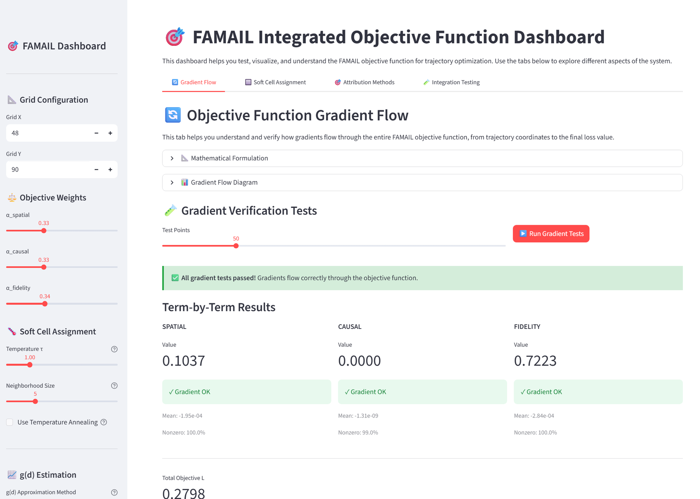
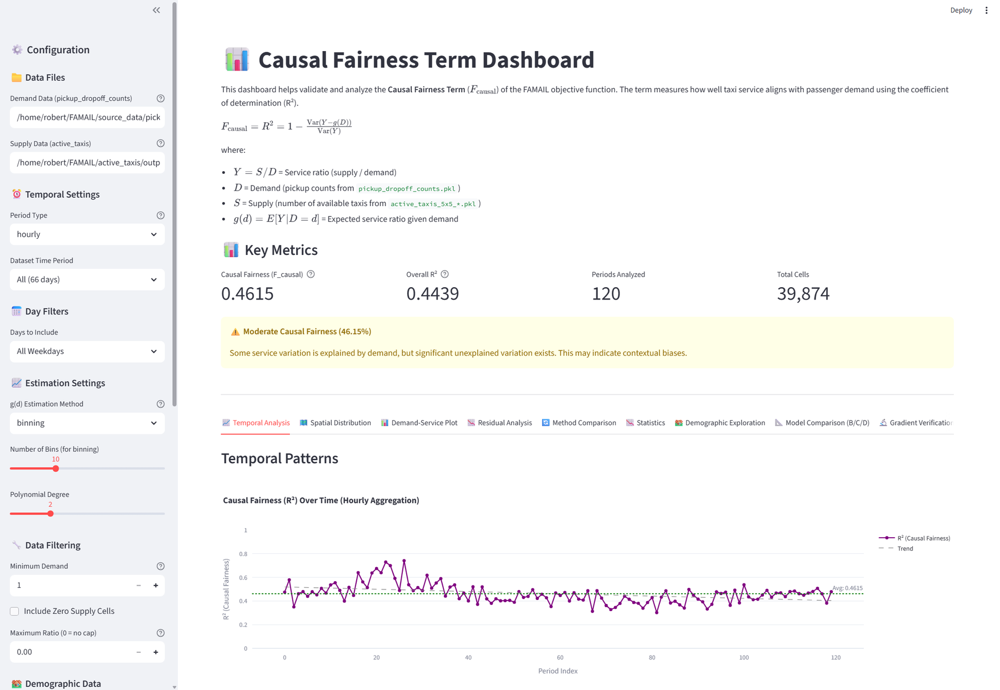
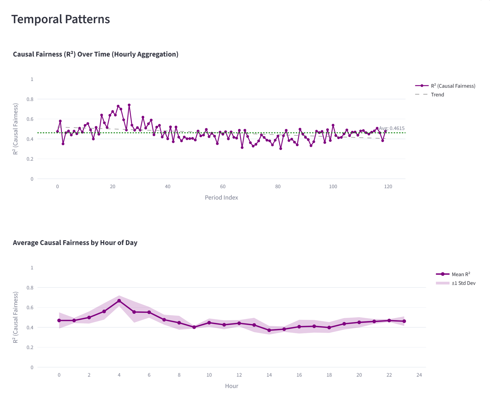

FAMAIL — Fairness-Aware Imitation Learning
Reducing bias amplification in multi-agent imitation learning.
The problem
Imitation-learning models trained on human-generated trajectories inherit human bias — and can amplify it. In urban mobility, behavioral cloning from taxi GPS data can entrench inequitable service patterns if left unchecked.
What I built
I'm developing a spatial-temporal data augmentation framework for taxi GPS trajectories that mitigates the propagation and amplification of human bias. I design PyTorch augmentation operators that perturb spatial-temporal features while preserving task-relevant structure, yielding fairer multi-agent imitation-learning policies.

Architecture
trajectories → Spatial-temporal
augmentation → Multi-agent
imitation learning → Fairer
policy
Human taxi trajectories pass through augmentation operators that perturb spatial-temporal features while preserving the structure a policy must learn. The augmented data trains multi-agent imitation-learning policies that are measurably fairer than those cloned directly from raw human behavior.

Highlights
- PyTorch augmentation operators perturb spatial-temporal features while preserving task structure.
- Cut augmentation runtime from 16 days (CPU) to 39 minutes by partitioning workloads across CPU and GPU.
- Contributes to a broader research agenda on responsible AI in urban mobility systems.

Tech stack
Gallery
More dashboards and analysis are on the dedicated FAMAIL project site.
